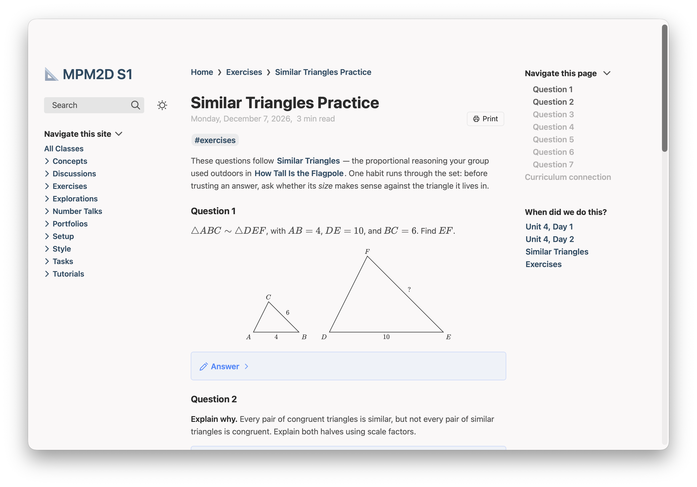
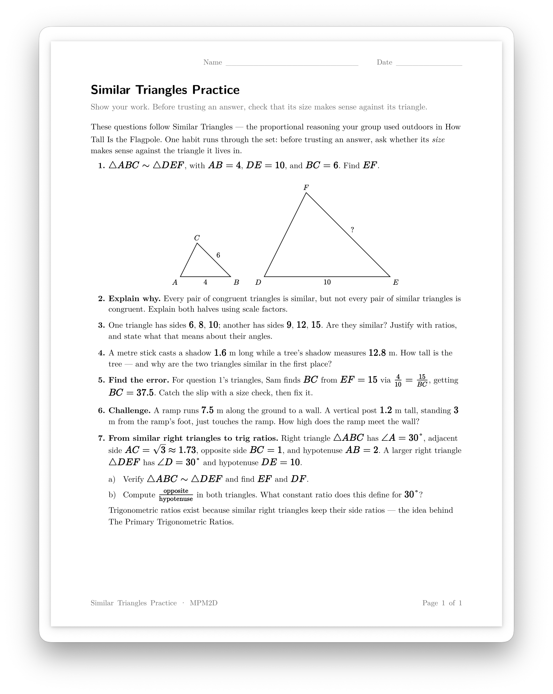

Printing
A worksheet in your notes can print as a proper handout: questions only, answers only, or both, set like a typeset worksheet. One line in the page's settings is the whole job.
This page shows the text you type, exactly as you type it, beside what students get from it. The example comes from the ready-made mathematics course for MPM2D, so you can open the same page in a course of your own.
Nothing here changes a page you already have. A page you don't mark is built and printed exactly as before.
On the Mac. The Windows version gets this in a later release.
Handouts that print properly
Add one line to the settings at the top of a worksheet, write each question under its own heading, and fold each answer away. That's all.
What you type
---
printable: true
---
### Question 1
$\triangle ABC \sim \triangle DEF$, with $AB = 4$, $DE = 10$,
and $BC = 6$. Find $EF$.
> [!answer]-
>
> $EF = 15$. The scale factor is $\frac{10}{4} = 2.5$.What students get
A Print button beside the date. It asks for Portrait or Landscape, then Questions only, Answers only or Both — the questions, then the answers on a fresh page — and prints a handout set like a typeset worksheet: the student's name and date lines, numbered questions with lettered parts side by side, and the page's title and number at the foot of every page.


What it accepts
printable: truein the settings block marks the page. Written exactly like that.- A heading
### Question 3prints as the number “3.” beside the question's words. A numbered list under a question is its parts, lettered a), b), c). - An answer is a folded callout —
> [!answer]-,[!solution]-or[!success]-— with an empty>line after its first line. It moves to the answer key, labelled with its question's number. - An open
[!example]callout is a worked example and keeps its box on paper. A folded[!tip]-hint prints opened, where it is. description:in the settings prints under the title, as a worksheet's instructions line.printPdf: Unit 3 Review.pdfhands out a PDF you already have instead — put it in the course's Media folder, the same place your images go.- The Curriculum connection section never prints, from the button or from the browser's own Print.
A page you don't mark keeps the browser's own Print, which now prints the page's article in full, without the site's menus beside it.
The course's printing settings
Course Settings has a Printing section, and what you choose there is used on every printable page in the course:
- School name, printed at the top left or the bottom left of each page, or not at all.
- Blanks to fill in: Name, Date and Class #, each switched on or off.
- Course code, printed at the top left or the bottom left, or not at all.
A small sketch of a page's corners beside the settings shows where each will land before you print anything.
Or ask Claude or Codex
You don't have to learn any of this. Plantoir writes its guidance for printable pages into your working folder, and keeps it up to date, so Claude Code or Codex started there already knows how to mark a page printable, number its questions, fold each answer away so it moves to the key, and hand out a PDF you already have instead. There is nothing to install or paste.
Asked, in a working folder holding an MPM2D course, something like:
Make the page "courses/MPM2D/Exercises/Similar Triangles Practice.md" printable, with each answer folded away so it prints as a key.its guidance has it write the page in the shape shown above: printable: true in the settings, each question under its own heading, each answer in a folded [!answer]- callout.
Open either from a course's menu with Revise With ▸ Claude… or Codex…, which starts it in your working folder.